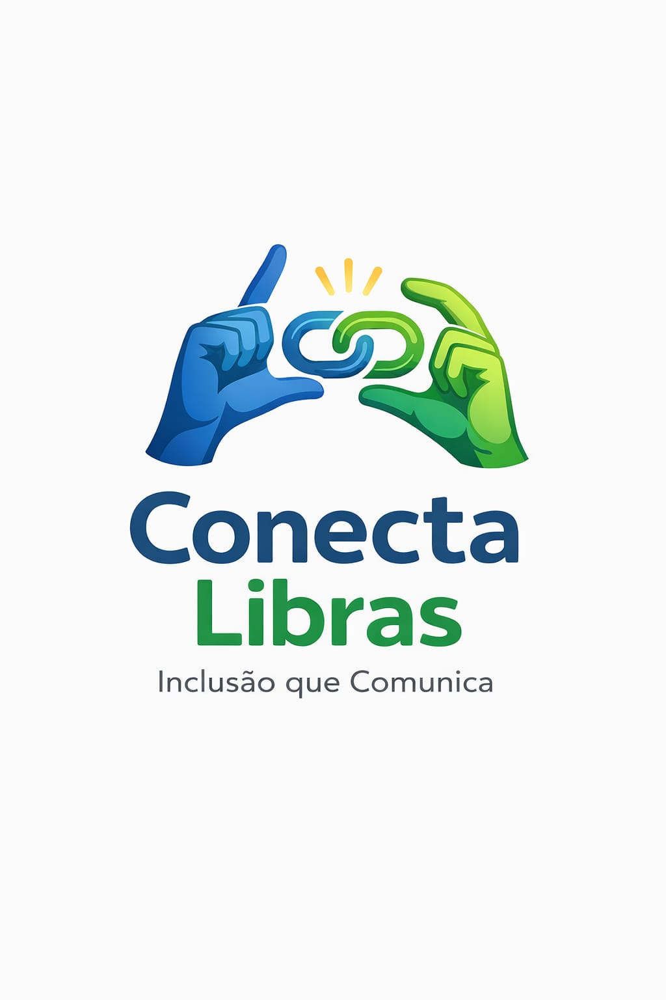
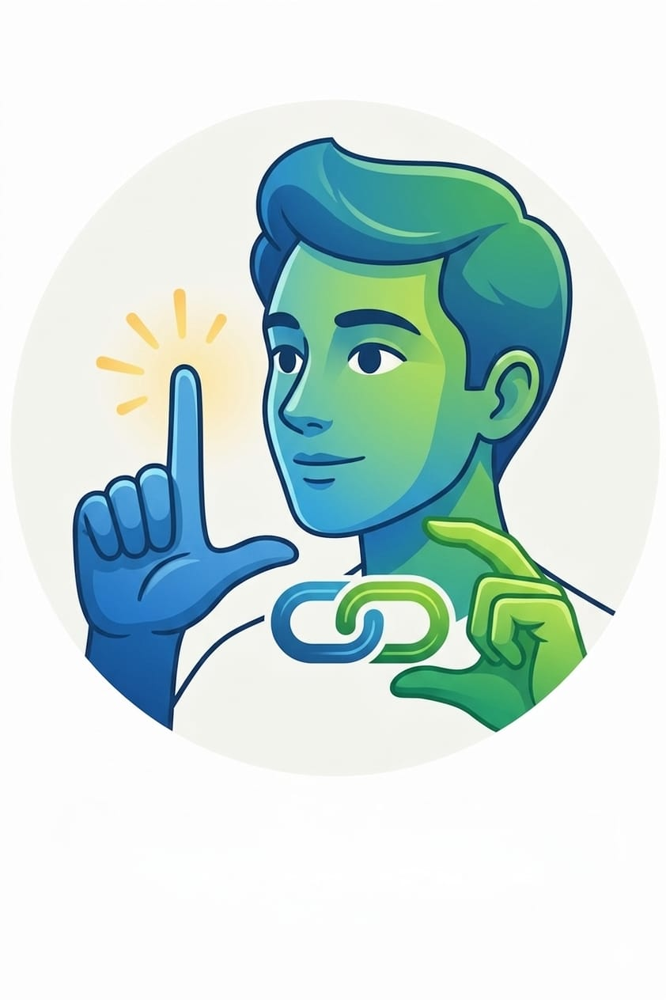

Capacite sua equipe para criar um ambiente mais inclusivo e acessível. Aprenda Libras básica, comunicação inclusiva e o uso de tecnologias assistivas.

Conheça a Libras, sua base legal, seu uso profissional e o alfabeto manual.
Entenda como estruturar a organização para receber e integrar profissionais surdos com equidade.
Elimine barreiras e garanta que todas as mensagens sejam compreendidas por todos.
Transforme a inclusão em valor, prática e rotina dentro da empresa.
Adapte forma e conteúdo para tornar a informação acessível e compreensível.
Use contato visual, iluminação adequada, clareza na fala e apoio visual.
Conheça ferramentas que ajudam a reduzir barreiras no ambiente corporativo.
Veja como o app pode apoiar a tradução de textos e áudios para Libras.
Questionário final para verificar o nível de compreensão dos participantes.